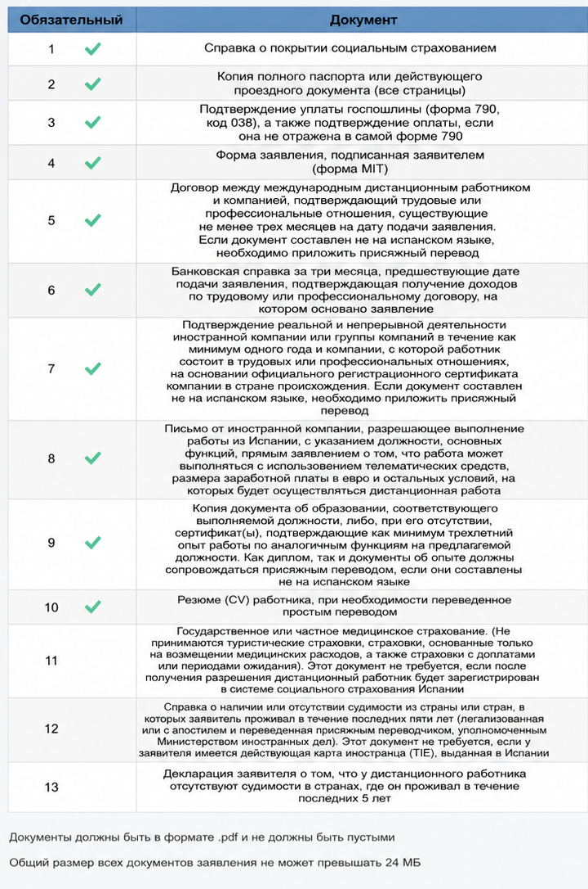

Первичная подача
Полный список документов для визы и ВНЖ цифрового кочевника в Испании для тех, кто работает в найме
Помощь в подаче документов на ВНЖ Испании: t.me/ola_espana
Полный список документов для визы и ВНЖ цифрового кочевника в Испании для заявителя из России, который работает дистанционно по трудовому договору с компанией или группой компаний за пределами Испании. В испанских источниках эта категория называется teletrabajador internacional por cuenta ajena.
Если вы работаете с компаниями как независимый исполнитель, см. документы для тех, кто работает по контракту.
Список документов
Ниже — основной список документов для подачи на визу или ВНЖ цифрового кочевника для тех, кто работает в найме. Присяжный перевод (traducción jurada, также называют хурадо-переводом) — официальный перевод на испанский, выполненный присяжным переводчиком.
| Документы для тех, кто работает в найме |
|---|
| Подтверждение социального страхования Документ показывает, законодательство какой страны продолжает применяться к работнику во время работы из Испании. Для сотрудника российского работодателя это свидетельство об отъезде, которое выдает Социальный фонд России (СФР): в нем указываются работник, работодатель и период, на который сохраняется российское социальное страхование при удалённой работе из Испании. Для подачи готовят бумажный оригинал, апостиль и присяжный перевод. См. Свидетельство СФР и присяжный перевод. |
| Паспорт Полная копия действующего загранпаспорта — все страницы, включая пустые. |
| Госпошлина Tasa 790 038 Форма государственной пошлины по заявлению и подтверждение оплаты. Если оплата не отражена на самой форме, прикладывают отдельную квитанцию или подтверждение банка. |
| Заявление MIT Официальная форма Formulario MIT, заполненная и подписанная заявителем или представителем в пределах его полномочий. См. Formulario MIT. |
| Трудовой договор Подтверждает работу в найме и действующие трудовые отношения с работодателем за пределами Испании. На дату подачи отношения должны существовать не менее 3 месяцев; из договора и дополнительных соглашений должно быть понятно, что работа может выполняться дистанционно из Испании. Для русского договора нужен перевод на испанский. См. присяжный перевод. |
| Банковская выписка за последние 3 месяца Показывает фактическое поступление заработной платы. Лучше, чтобы платежи за каждый месяц можно было сопоставить с зарплатными листами и суммой по трудовому договору. См. Банковская выписка. |
| Документы о регистрации работодателя Подтверждают, что работодатель реально существует и ведет деятельность не менее 1 года. Для российского юридического лица нужна бумажная выписка из ЕГРЮЛ, полученная в ФНС или МФЦ; если работодатель зарегистрирован как ИП — выписка из ЕГРИП. Для подачи используется официальный документ с апостилем и присяжным переводом. См. Документы компании: ЕГРЮЛ и ЕГРИП и присяжный перевод. |
| Письмо работодателя о дистанционной работе из Испании Работодатель подтверждает разрешение работать удалённо из Испании, должность и основные функции сотрудника, что работа может выполняться дистанционно с использованием электронных средств, сохранение трудовых отношений, размер зарплаты в евро и основные условия работы. См. Письмо компании. |
| Диплом или подтверждение профессионального опыта Подтверждает квалификацию заявителя: профильное образование либо не менее 3 лет профессионального опыта в функциях, аналогичных заявленной работе. Российский диплом подается с апостилем и присяжным переводом. Опыт можно подтверждать официальной выпиской из трудовой и другими документами о работе. См. Апостиль диплома, Выписка из трудовой и присяжный перевод. |
| Резюме (CV) на испанском Краткое резюме с образованием, профессиональным опытом, текущей должностью и навыками, которые связывают квалификацию заявителя с выполняемой работой. См. Резюме (CV). |
| Медицинское страхование Если заявитель не подтверждает государственное медицинское покрытие в Испании, для подачи нужен частный медицинский полис испанской страховой компании. Полис должен обеспечивать полноценное покрытие в Испании без доплат за каждое обращение или услугу (sin copagos), без периодов ожидания (carencias) по основным медицинским и госпитальным услугам и не должен быть основан только на возмещении медицинских расходов. Подробнее о страховке ↓ |
| Справка о несудимости При первичной подаче подтверждает отсутствие судимости в странах проживания за последние 2 года, если не действует исключение UGE. Российская справка подается с апостилем и присяжным переводом. См. Справка о несудимости и присяжный перевод. |
| Декларация об отсутствии судимости за последние 5 лет (скачать) Отдельная декларация заявителя на испанском языке (declaración responsable). Она не заменяет справку о несудимости, когда справка требуется; перевод не нужен. |
| Зарплатные листы за последние 3 месяца Подтверждают начисленную заработную плату и регулярность дохода. Их удобно подавать вместе с банковской выпиской за тот же период, чтобы суммы и даты можно было сопоставить. |
| Подтверждение легального нахождения в Испании Нужно при подаче на ВНЖ из Испании. Для первичной подачи прикладывают загранпаспорт и доказательство въезда или легального пребывания: визу, штамп въезда или declaración de entrada — официальное подтверждение въезда в Испанию. Если у заявителя уже есть действующая TIE, прикладывают TIE. См. Легальное нахождение. |
| Сопроводительное письмо Коротко объясняет состав пакета, нестандартные документы, объединенные файлы и то, в какие поля электронной формы они загружены. Особенно полезно, если документ подтверждает сразу несколько требований. |
| Документ о назначении представителя — если подаёт представитель Designación de representante подтверждает полномочия представителя подписать заявление и подать документы от имени заявителя. Если заявитель подается самостоятельно, этот документ не нужен. |
Пример состава пакета для подачи
Пример названий файлов для тех, кто работает в найме. Файлы 01–13 идут в порядке полей формы UGE; остальные загружаются в раздел дополнительных документов.
- 01_Certificado_cobertura_Seguridad_Social.pdf — свидетельство СФР об отъезде или другое подтверждение применимого социального страхования.
- 02_Pasaporte.pdf — полный загранпаспорт, все страницы.
- 03_Tasa_790_038.pdf — госпошлина Tasa 790 038 и подтверждение оплаты.
- 04_Formulario_MIT.pdf — заполненное и подписанное заявление MIT.
- 05_Contrato_laboral.pdf — трудовой договор и, при необходимости, дополнительное соглашение об удалённой работе из Испании.
- 06_Certificado_bancario_ultimos_3_meses.pdf — банковская выписка или сертификат с поступлениями зарплаты за последние 3 месяца.
- 07_Certificado_registro_empresa.pdf — документ о регистрации работодателя; для российского юрлица — выписка из ЕГРЮЛ.
- 08_Carta_empresa.pdf — письмо работодателя с разрешением работать удалённо из Испании.
- 09_Titulo_o_experiencia.pdf — диплом либо документы, подтверждающие профессиональный опыт.
- 10_CV.pdf — резюме заявителя на испанском.
- 11_Seguro_medico.pdf — сертификат медицинской страховки.
- 12_Certificado_antecedentes_penales.pdf — справка о несудимости, если она требуется.
- 13_Declaracion_responsable_antecedentes.pdf — декларация об отсутствии судимости за последние 5 лет.
Дополнительные документы
- Carta_explicativa.pdf — сопроводительное письмо.
- Nominas_ultimos_3_meses.pdf — зарплатные листы за последние 3 месяца.
- Estancia_regular_en_Espana.pdf — загранпаспорт с доказательством въезда или легального пребывания либо TIE.
- Representacion.pdf — документ о назначении представителя, если заявление подаёт представитель.
Медицинская страховка для тех, кто работает в найме
Если нет подтвержденного государственного медицинского покрытия в Испании, для визы или ВНЖ цифрового кочевника нужен частный медицинский полис испанской страховой компании с полноценным покрытием на территории Испании.
Для иммиграционной подачи выбирайте полис без доплат за каждое посещение врача, анализ или другую медицинскую услугу — по-испански sin copagos. Также в полисе не должно быть периодов ожидания (carencias), когда часть услуг становится доступна только через несколько месяцев после начала страховки. Не подходят полисы, основанные только на возмещении понесённых медицинских расходов.
Перед оплатой попросите у страховой или агента сертификат для подачи на ВНЖ или визу. В нем должны быть указаны застрахованный, дата начала полиса и характер покрытия.
Примеры подходящих по формату страховых продуктов: DKV Visado, AXA Óptima и Sanitas Residents. Перед оформлением проверяйте условия конкретного тарифа на дату подачи: названия и условия страховых продуктов могут меняться.
Раздел с файлами в форме подачи
Основные документы загружаются в свои поля электронной формы UGE, а документы без отдельного поля — в раздел «Другие документы».

Официальные ссылки
Закон, памятка UGE, страница подачи и другие официальные ресурсы собраны на странице Полезные ссылки.